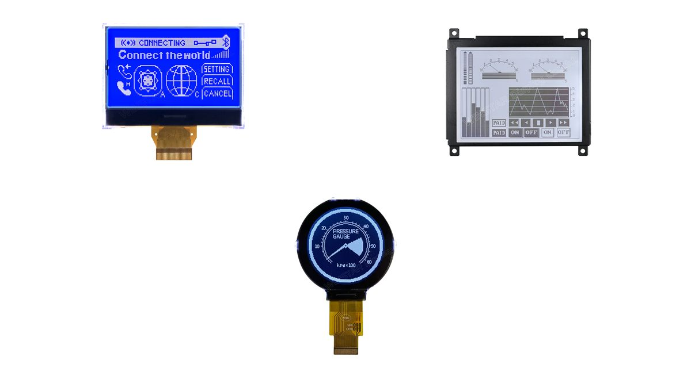

Graphic COG LCD Technology
Monochrome Chip-on-Glass graphic LCD modules from 1.87" to 5.18", with resolutions from 132x32 to 320x240. Find out how COG construction works, and how to choose a controller, interface and connection.
Monochrome Chip-on-Glass graphic LCD modules from 1.87" to 5.18", with resolutions from 132x32 to 320x240. Find out how COG construction works, and how to choose a controller, interface and connection.

A graphic COG (Chip on Glass) LCD is a monochrome dot matrix display in which the driver and controller IC is bonded directly onto the display glass. There is no separate controller PCB behind the panel, so the module is thinner, lighter and has fewer parts than a traditional COB (Chip on Board) LCD. A thin flexible printed circuit (FPC) or a row of metal pins connects the display to your host board.
As the authorised distributor for Winstar Display Corporation we offer graphic COG LCD modules from the 1.87" 128x64 WO12864P up to the 5.18" 240x64 WO24064A1, including square, wide and circular formats. Each module has an on-glass controller supporting I²C, SPI or 6800/8080 parallel interfaces, an LED backlight, and a choice of STN and FSTN display modes.
Controller bonded directly to the glass
Resolutions from 132x32 to 320x240
I²C, SPI and 6800/8080 parallel interfaces
3V and 3.3V logic supply
FPC, metal pin and PCB connection options
Operating range -20℃ to +70℃
An LCD is a light valve. A thin layer of liquid crystal sits between two sheets of glass, with polarisers on the outside. Applying a voltage across a pixel twists the liquid crystal and changes how much light passes through, so the pixel appears dark or light against the background. An LED backlight behind the panel lights the display in the dark.
In a COG module the bottom glass is made slightly larger than the top glass, leaving a ledge. The controller IC is bonded straight onto that ledge with anisotropic conductive film, and connects to the row and column electrodes printed on the glass. The controller stores the image in its own memory and drives the display at a set duty cycle, for example 1/65 for a 128x64 panel, so your microcontroller only writes data when the picture changes.
Simplified illustration, not to scale: layer thicknesses are exaggerated for clarity
Why designers choose Chip on Glass for compact graphic displays
With no controller PCB behind the glass, modules such as the WO12864A1 are just 5.01mm deep including the backlight.
Fewer parts and no PCB mean a lighter module, ideal for handheld and portable equipment.
Monochrome LCDs draw very little current from a 3V or 3.3V logic supply, suiting battery powered devices.
The on-glass controller holds the image in memory and generates the LCD drive voltage, so few external parts are needed.
Positive transflective FSTN types use ambient light as well as the backlight, staying readable in bright conditions.
Several models share outlines with earlier displays, such as the 256x128 WO256128A and the 128x64 WO12864D3.
Most COG modules connect through an FPC tail, which keeps the module thin and lets the display sit away from the main PCB. Some models use metal pins for direct soldering, and some come on a small PCB with mounting holes.
A connection board is also available to change the interface from FPC to pins or cables, with a variety of pin out connections to suit your design.
| Connection | Example | Best Suited To |
|---|---|---|
| FPC tail | WO12864P, WO13232A, WO128128A | Thinnest designs, flexible placement |
| Metal pins | WO160160B | Direct soldering to the host PCB |
| COG on PCB | WO240160A | Mounting holes, simple installation |
| Connection board | Optional for FPC models | Converting FPC to pins or cables |
The controller sets which interfaces a module supports, and many support several, selected by pin settings. I²C needs only two signal lines, SPI is faster, and 8-bit parallel gives the highest throughput where your microcontroller has the pins to spare.
Our engineers can help match a display, controller and interface to your design and arrange samples.
| Interface | Signal Lines | Best Suited To |
|---|---|---|
| I²C | 2 (clock, data) | Low pin count MCUs, small displays |
| SPI (3 or 4-line) | 3 to 4 | Faster updates with few pins |
| 6800 / 8080 parallel | 8 data + control | Highest throughput, 320x240 displays |
Compare our graphic COG LCD modules by size, resolution, controller, interface and outline
| Model | Size | Resolution | Controller | Interface | Outline (mm) |
|---|---|---|---|---|---|
| WO12864P | 1.87" | 128x64 | ST7567S | 6800, 8080, 4-line SPI | 55.2 x 39.8 x 6.0 |
| WO13232A | 2.15" | 132x32 | ST7567A | I²C | 65.4 x 28.2 x 9.7 |
| WO12864A1 | 2.24" | 128x64 | ST7565P | 6800, 8080, 4-line SPI | 60.1 x 44.5 x 5.01 |
| WO128128A | 2.45" round | 128x128 | ST75161 | 6800, 8080, SPI, I²C | 55.0 x 57.0 x 6.18 |
| WO256128A | 2.93" | 256x128 | ST75256 | 6800, 8080, 4-line SPI, I²C | 80.0 x 54.0 x 9.5 |
| WO160160B | 3.03" | 160x160 | UC1698U | 6800, 8080 | 82.2 x 77.5 x 7.43 |
| WO240160A | 3.24" | 240x160 | ST7529 | 6800, 8080 | 93.0 x 64.2 x 9.8 |
| WO240128A | 3.75" | 240x128 | UC1608 | 6800, 8080, 3 or 4-line SPI | 98.7 x 67.7 x 9.5 |
| WO320240E | 3.77" | 320x240 | RA8835 | 6800, 8080 | 94.7 x 83.3 x 9.4 |
| WO32032A | 4.24" | 320x32 | ST7586S | 3 or 4-line SPI | 114.32 x 27.56 x 5.6 |
| WO24064A1 | 5.18" | 240x64 | ST7565P | 6800, 8080, 4-line SPI | 142.5 x 51.7 x 14.9 |
Outline thickness is the maximum, including backlight. See the datasheet or contact us for details. View Graphic COG LCD Modules →
Graphic COG LCDs suit compact devices that need a clear, low power display
Meters, testers and portable instruments where size, weight and battery life matter.
Monitors, pumps and personal medical devices with simple graphic user interfaces.
Control panels, automation systems and machine status displays.
Gauges, data loggers and measurement instruments, including round displays for dials.
Scanners, data terminals and portable equipment needing a larger graphic area.
Thermostats, energy meters and monitoring systems showing icons and status messages.
Our engineering team can help specify or develop a custom solution for your exact requirements.
Talk to Our Engineers